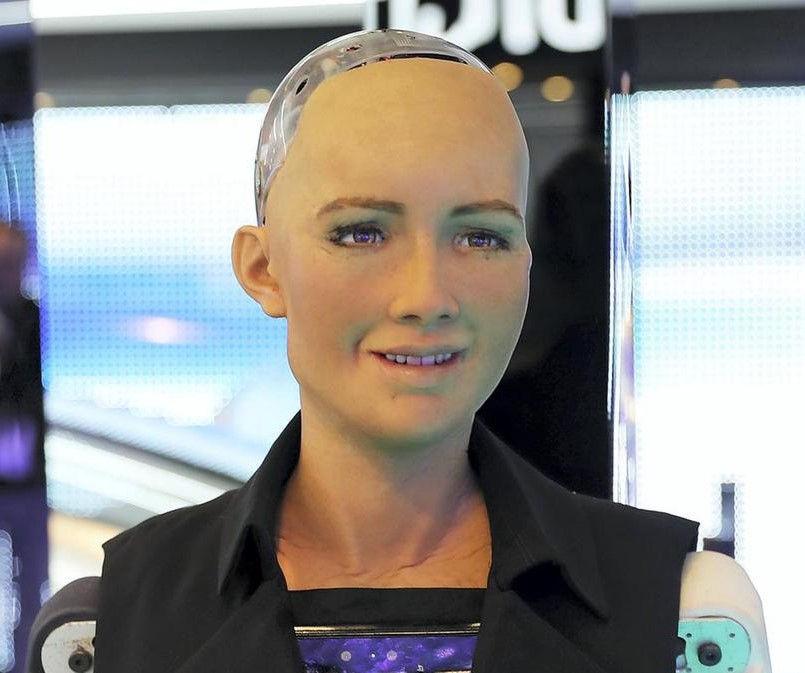

Sophia
Sophia, az intelligens humanoid robot kétségtelenül a legismertebb robot a témában, melyet a hongkongi székhelyű Hanson Robotics cég fejlesztett ki. Sophia agyát először 2016. február 14-én kapcsolták be, első nyilvános megjelenésére a South by Southwest Festival (SXSW) rendezvényen került sor 2016. március közepén Austinban, az Egyesült Államokban.
Sophiát az ókori egyiptomi Nefertiti királynő, Audrey Hepburn és a feltaláló felesége alapján mintázták és modellezték. Az emberi jellegű megjelenése és viselkedése rendkívül precíz lett az eddig ismert, korábbi robotváltozatokkal összehasonlítva.
David Hanson azt mondta, hogy Sophia kiválóan alkalmazható lesz egészségügyi, ügyfélszolgálati, terápiás és oktatási szolgálatokban is. 2019-ben Sophia megmutatta azt a képességét is, hogy rajzokat képes készíteni, beleértve akár az emberi arcportrékat is.

Sophia
Ameca